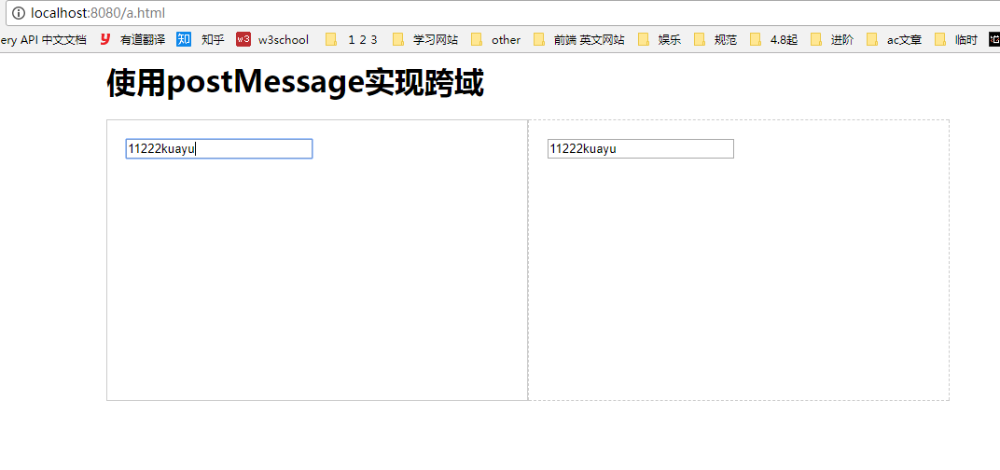
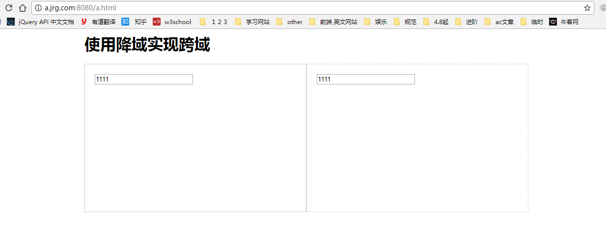

1.什么是同源策略
同源策略（Same origin Policy）：浏览器出于安全性考虑，只允许与本域下的接口交互，不同源的客户端脚本在没有明确授权的情况下，不能读写对方的资源。
如果协议，端口（如果指定了一个）和域名对于两个页面是相同的，则两个页面具有相同的源。
例如：http://store.company.com/dir/page.html
2.什么是跨域？跨域有几种实现形式
跨域就是向不同源的地址请求资源或者是进行操作。常见的形式有：jsonp，cores，postMassage，降域。
3.JSONP
JSONP（JSON with Padding）:jsonp不是json数据，JSON是一种数据格式，而JSONP是一种数据调用方式，是解决JSON跨域获取的解决方案。因此JSONP其实是一个非官方的协议。
- 原理： 网页通过添加一个
<script>元素，向服务器请求JSON数据，这种做法不受同源政策限制；服务器收到请求后，将数据放在一个指定名字的回调函数里传回来。 - 具体实现方式：
- 定义数据处理函数fun
- 创建script标签，src的地址执行后端接口，最后加个参数callback=fun
- 服务端在收到请求后，解析参数，计算返还数据，输出 fun(data) 字符串。
- fun(data)会放到script标签做为js执行。此时会调用fun函数，将data做为参数。
1 | 前端代码 |
1 | 后端代码 |
JSONP只能用get请求来实现，JSONP的优势在于支持老式浏览器
4.CORS
CORS 全称是跨域资源共享（Cross-Origin Resource Sharing），是一种 ajax 跨域请求资源的方式，支持现代浏览器，IE支持10以上。 实现方式很简单，当你使用 XMLHttpRequest发送请求时，浏览器发现该请求不符合同源策略，会给该请求加一个请求头：Origin，后台进行一系列处理，如果确定接受请求则在返回结果中加入一个响应头：Access-Control-Allow-Origin; 浏览器判断该相应头中是否包含 Origin 的值，如果有则浏览器会处理响应，我们就可以拿到响应数据，如果不包含浏览器直接驳回，这时我们无法拿到响应数据。
具体实现方式：
- 当使用
XMLHttpRequest发送请求时，浏览器发现该请求不符合同源策略，会给该请求加一个请求头：Origin，后台进行一系列处理 - 如果确定接受请求则在返回结果中加入一个响应头：
Access-Control-Allow-Origin - 浏览器判断该相应头中是否包含 Origin 的值,包含则处理响应，我们成功拿到返回的数据。不包含则由于同源策略的限制，无视响应，我们无法拿到数据
CORS分为简单请求和需预检的请求：
简单请求：满足以下所有条件的请求是简单请求，不需要预检
- 请求方式是这几种之一：HEAD GET POST
- HTTP的头信息不超过以下几种字段：
1
2
3Accept Accept-Language Content-Language Last-Event-ID
Content-Type：只限于三个值application/x-www-form-urlencoded、multipart/form-data、text/plain
需预检的请求：凡是不能满足简单请求的条件的请求就是需预检的请求
- 非简单请求的CORS请求，会在正式通信之前，增加一次HTTP查询请求，称为”预检”请求（preflight）
- 浏览器先询问服务器，当前网页所在的域名是否在服务器的许可名单之中，以及可以使用哪些HTTP动词和头 信息字段。只有得到肯定答复，浏览器才会发出正式的
XMLHttpRequest请求，否则就报错。
1 | 前端代码 |
1 | 后台代码 |
CORS支持所有类型的HTTP请求，但是只有现代浏览器和ie10以上的浏览器支持。
5.postMessage
postMessage()是HTML5的一个API，使用这种方法最重要的就是发送消息和接受消息。在页面A中向页面B发送请求，然后在页面B中监听请求并获取A发送的数据，即可实现跨域。
页面A发送消息：调用postMessage API向目标窗口B 发送消息window.postMessage(data, origin)
页面B接收消息：目标窗口B监听message事件window.addEventListener('message',function (e) { console.log(e.origin,e.data) })
1 | 页面a a.jrg.com/a.html 像localhost:8080/b.html发送信息 |
1 | 页面b |

6.降域
此种方法需要主域相同且子域不同，有较大限制
1 | 页面a |
1 | 页面b |
